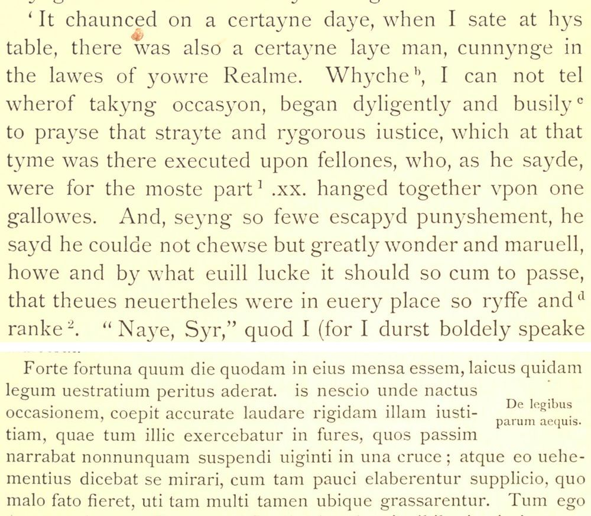
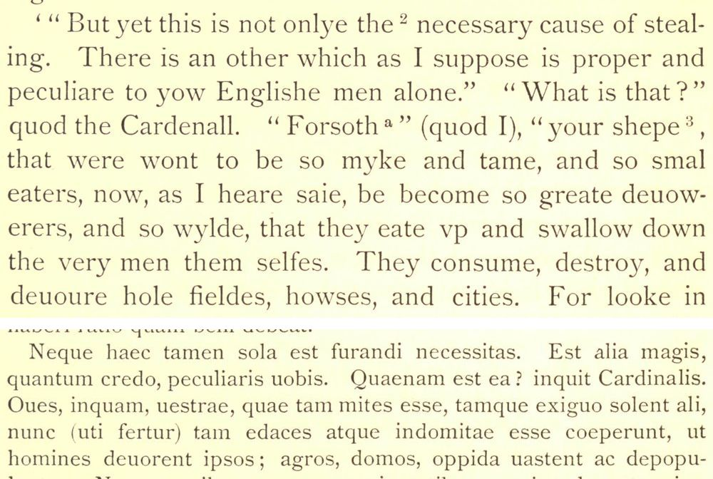

“Twenty hanged together upon one gallows” (p. 43)
Lupton’s edition, p. 43, scan n154: Robinson’s English (1551) above, More’s Latin (1518) below. Highlighted: the words behind Lecky’s “twenty men hung on one gibbet”.

‘It chaunced on a certayne daye, when I sate at hys table, there was also a certayne laye man, cunnynge in the lawes of yowre Realme. Whyche, I can not tel wherof takyng occasyon, began dyligently and busily to prayse that strayte and rygorous iustice, which at that tyme was there executed upon fellones, who, as he sayde, were for the moste part .xx. hanged together vpon one gallowes. And, seyng so fewe escapyd punyshement, he sayd he coulde not chewse but greatly wonder and maruell, howe and by what euill lucke it should so cum to passe, that theues neuertheles were in euery place so ryffe and ranke.
One day, as it happened, when I was at his table, a layman learned in your country’s laws was there. Taking his occasion from I know not what, he began to praise with great care that rigorous justice which was then being done there upon thieves, who, he said, were being hanged everywhere, sometimes twenty on one cross; and he said he wondered all the more, since so few escaped punishment, by what ill fate it came about that so many were nevertheless at large everywhere.
Translation of the Latin: this edition’s draft.
Original Latin
Forte fortuna quum die quodam in eius mensa essem, laicus quidam legum uestratium peritus aderat. is nescio unde nactus occasionem, coepit accurate laudare rigidam illam iustitiam, quae tum illic exercebatur in fures, quos passim narrabat nonnunquam suspendi uiginti in una cruce; atque eo uehementius dicebat se mirari, cum tam pauci elaberentur supplicio, quo malo fato fieret, uti tam multi tamen ubique grassarentur.
“Your shepe … eate vp and swallow down the very men” (p. 51)
Lupton’s edition, p. 51, scan n162. Hythloday is answering the lawyer before the Cardinal. Highlighted: the passage on enclosure that Lecky’s text summarises.

“But yet this is not onlye the necessary cause of stealing. There is an other which as I suppose is proper and peculiare to yow Englishe men alone.” “What is that?” quod the Cardenall. “Forsoth” (quod I), “your shepe, that were wont to be so myke and tame, and so smal eaters, now, as I heare saie, be become so greate deuowerers, and so wylde, that they eate vp and swallow down the very men them selfes. They consume, destroy, and deuoure hole fieldes, howses, and cities.
Yet this is not the only thing that drives men to steal. There is another, I think, more peculiar to you. What is that? said the Cardinal. Your sheep, I said, which used to be so mild and to feed on so little, have now (so it is said) begun to be so greedy and so wild that they devour men themselves; they lay waste and depopulate fields, houses and towns.
Translation of the Latin: this edition’s draft.
Original Latin
Neque haec tamen sola est furandi necessitas. Est alia magis, quantum credo, peculiaris uobis. Quaenam est ea? inquit Cardinalis. Oues, inquam, uestrae, quae tam mites esse, tamque exiguo solent ali, nunc (uti fertur) tam edaces atque indomitae esse coeperunt, ut homines deuorent ipsos; agros, domos, oppida uastent ac depopulentur.
Hythloday goes on, over the next pages (read in the OCR only, except the line quoted here), to describe noblemen and abbots enclosing all into pasture, “leauyng nothing stondynge but only the churche, to make of it a shepehowse”, and the evicted tenants driven to beg or steal, and then hanged.
Further down the rabbit hole
Sources that Lecky cites in the notes next to the ones that cite this page.
- Barrington, Observations on the More Ancient StatutesHenry VIII’s 72,000 hangings, and why English thieves had “better hearts”
- Descartes, Réponses aux sixièmes objectionsReal fire, or an idea of fire? The damned and the deceiving God
- Berkeley, The QueristA bishop’s questions to Ireland: hard labour instead of the gallows
- Agobard, Liber de imaginibusLecky’s five Agobard quotes checked against Baluze
- Aquinas, Summa theologiae, Supplement, q. 94Lecky’s quotation that is really a paraphrase
- Augustine, De Genesi contra ManichaeosGenesis as allegory: the six days as the ages of history and the stages of the soul


Backlinks
Every place in Rationalism in Europe that links to this page (generated automatically when the site is built).
- Chapter III: note 179